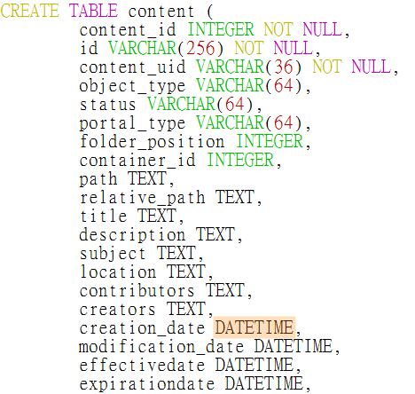

也紀念我們永遠的朋友 李士傑先生（Shih-Chieh Ilya Li）。
用自由軟體 Plone 來架設網站(10)－連接資料庫
儘管 NoSQL 一度成為熱門話題，我們還是活在 SQL 世界裡，到處可見 RDBMS (Relational database management system) 作為資料服務的後端引擎，使用 ZODB (Zope Object Database) 的 Plone 該如何與 SQL 資料庫和平共處，必然是整合人員關心的議題。想要存取 SQL 資料庫，早期是透過 Database Adapter 直接建立連接，再用 Z SQL Method 建立存取邏輯的程式，最後由 Page Template 建立操作介面。
除了 Database Adapter 之外，現在常見作法則是透過 SQLAlchemy 來連接，因為 SQLAlchemy 提供 Object-Relational-Mapper (ORM) 介面，讓 Python 程式員擁有更直覺的操作經驗。由於 RDBMS 的 transaction 系統必須和 Zope 搭配合作，SQLAlchemy 並不能直接在 Zope 裡面工作，必須藉由 zope.sqlalchemy 模組來整合。利用這些工具，本文將在 Plone 4.1 環境，分別以 MySQL 和 PostgreSQL 為範例，介紹幾種常見的資料庫結合方式。
整合原理
以 Database Adapter 為例，它們屬於 Zope 系統的低階程式，和資料庫連接後，透過 Database Connection 和 Plone 應用程式互動，如圖1 所示。
▲ 圖1 Zope 和關聯式資料庫連接示意
建立 Database Connection 後，通常再透過 Z SQL Method 存取資料庫，執行包括「查詢」、「新增」、「刪除」、「修改」的動作，執行結果再由 (Python) Script 或 Page Template 處理，最後產生成 HTML 給使用者，如圖2 所示。
▲ 圖2 透過 Z SQL Method 存取資料庫的示意
系統可以存在多個 Z SQL Method 和 Database Connection，同時存取不同的資料庫內容。
存取既有資料庫
MySQL 是很常見的線上資料庫選項，Python 或 Plone 可以透過 MySQL-python 和 ZMySQLDA 來連接，安裝方式是在 develop.cfg 檔案裡指定 MySQL 的 python 函式庫，還有 [zmysqlda] 的設定值，如圖3 所示。
註：由於 ZMySQLDA 未必追上 Zope2 的更新速度，有些變通的修改技巧，可私下討論，不在此文細述。
▲ 圖3 develop.cfg 設定 ZMySQLDA 範例
成功啟動 Zope 後，在 ZMI 裡可以看到 Z MySQL Database Connection 的新增選項，如圖4 所示。
▲ 圖4 ZMI 下拉選單可新增 Z MySQL DC
只需要在 Database Connection String 欄位，依序填寫 database user password 等參數，就能完成基本連結，如圖5 所示。
▲ 圖5 填寫 Z MySQL DC 連接字串
進入 MySQL_database_connection 後，點選 Test 頁籤，在此可編寫 SQL 語法，直接管理 MySQL 資料庫表單，例如，在文字區塊中填寫建立表單的語法，如圖6 所示。
▲ 圖6 在 Test 頁籤執行 SQL 語法
再點選 Submit Query 按鈕確認執行，系統回覆我們成功建立一個 dirbook 表格，如圖7 所示。
▲ 圖7 系統回應 MySQL 指令執行結果
點選 Browse 頁籤，可顯示新建表單的狀況，如圖8 所示。
▲ 圖8 在 Browse 頁籤顯示表單狀況
接著，可以繼續執行 SQL 語法來新增資料，如圖9 所示。
▲ 圖9 在 Test 頁籤執行新增資料
建立 Z SQL Method
假設 mysite 的 Plone 網站裡已建立一個 /mydirbook 目錄，我們在 ZMI 的 /mysite/mydirbook 裡，新增一個 Z SQL Method，如圖10 所示。
▲ 圖10 在 ZMI 新增 Z SQL Method
編輯 Z SQL Method 的 Id 和 Connection Id 欄位，假設我們要建立查詢的程式，在 Query Template 欄位輸入查詢的 SQL 語法內容，如圖11 所示。留意不需要在語法最後加上「;」符號。
▲ 圖11 編輯 Z SQL Method 內容的範例
同樣可以到 Test 頁籤，測試查詢結果，成功的話，畫面類似圖12 所示。
▲ 圖12 Z SQL Method 查詢結果範例
再於 /mysite/mydirbook 裡新增 Z Search Interface，選擇上述建立的 query_search，填寫 Report Id 和 Report Style 欄位，並選擇 Generate Page Templates 為程式碼格式，如圖13 所示。
▲ 圖13 編輯 Z Search Interface 內容的範例
此時，已經可以在 https://localhost:8080/mysite/mydirbook/result_search 之類的網址，看到資料庫查詢結果，不過，結果畫面還未跟 Plone 介面整合。
與 Plone 頁面結合
接著，我們需要修改 Search Interface 的 Page Template 內容，把上述的查詢結果，與 Plone 頁面結合。不過，預設的 Page Template 內容有多餘的 HTML 標籤：
＜html＜body＞
＜html＞
· here/query_search;
start request/start|python:0;
batch python:modules['ZTUtils'].Batch(results,
size=20,
start=start);
previous python:batch.previous;
next python:batch.next"
顯然的，多了一組標籤，請先刪除。
我們將從最簡單的調整做起，把 ＜div metal:fill-slot="main"＞ 加在 ＜html＞ 與 ＜body＞ 之間，再把 ＜/div＞ 加在 ＜/body＞ 與 ＜/html＞ 之間。完整的程式碼如下：
＜html xmlns="https://www.w3.org/1999/xhtml" xml:lang="en"
xmlns:tal="https://xml.zope.org/namespaces/tal"
xmlns:metal="https://xml.zope.org/namespaces/metal"
xmlns:i18n="https://xml.zope.org/namespaces/i18n"
lang="en"
metal:use-macro="here/main_template/macros/master"
i18n:domain="plone"＞
＜div metal:fill-slot="main"＞ ＜body tal:define="results here/query_search; start request/start|python:0; batch python:modules['ZTUtils'].Batch(results, size=20, start=start); previous python:batch.previous; next python:batch.next"
tal:attributes="href string:${request/URL0}?start:int=${next/first}"
href="/next_url"
＜table border＞
＜tr＞
＜th＞Name＜/th＞
＜th＞Email＜/th＞
＜th＞Tel＜/th＞
＜/tr＞
＜tal:x repeat="result batch" ＞
＜tr＞
＜td＞＜span tal:replace="result/name"＞name goes here＜/span＞＜/td＞
＜td＞＜span tal:replace="result/email"＞email goes here＜/span＞＜/td＞
＜td＞＜span tal:replace="result/tel"＞tel goes here＜/span＞＜/td＞
＜/tr＞
＜/tal:x＞
＜/table＞
＜p＞
＜a tal:condition="previous"
tal:attributes="href string:${request/URL0}?start:int=${previous/first}"
href="/previous_url"＞previous ＜span tal:replace="previous/length"＞20＜/span＞ results＜/a＞
＜a tal:condition="next"
tal:attributes="href string:${request/URL0}?start:int=${next/first}"
href="/next_url"＞next ＜span tal:replace="next/length"＞20＜/span＞ results＜/a＞
＜/p＞
＜/body＞
＜/div＞
＜/html＞
這樣就把 Z SQL Method 的執行結果與 Plone 頁面結合，如圖14 所示。
▲ 圖14 Z SQL Method 執行結果與頁面整合
同步備份的場合
另一個常見的應用方式，是備份 Plone 內容到 SQL 資料庫裡。安裝 ore.contentmirror 模組後，就能夠把 Plone 網站的內容，同步備份到 SQL 資料庫，這種方式特別適合全新的 Plone 網站，原本儲存到 ZODB 的內容資料，會同時儲存在 SQL 資料庫。
ore.contentmirror 原則上支援所有 Archetypes 的內容，也支援各種常見的 SQL 資料庫，下列則以 Plone 4.1 環境搭配 PostgreSQL 作為範例。
在 develop.cfg 設定檔裡，指定 eggs 和 zcml 設定值，並新增 [zopepy] 的設定內容，如圖15 所示。
▲ 圖15 安裝 contentmirror 的 develop.cfg 內容
特別注意到 psycopg2 的安裝，它扮演 Database Driver 角色。
接著，要執行設定步驟，先找到 ore.contentmirror 安裝的目錄位置，例如 buildout-cache/eggs/ore.contentmirror-0.7.1-py2.6.egg/ore/contentmirror 目錄，建立一個 settings.zcml 檔案，內容如圖16 所示。
▲ 圖16 settings.zcml 設定範例
最重要的內容是＜ore:engine /＞裡的資料庫連接設定值，其中的 postgres:mypass 分別代表存取帳號和密碼，請自行配合修改，最後面的 ContentMirror 是資料庫名稱。
接下來的步驟，是產生 SQL DDL/Schema 檔案，可藉由 mirror-ddl 工具程式來完成，原則上的指令內容如圖17 所示。
▲ 圖17 資料庫 Schema 建置的指令步驟範例
不過，實際上很可能會遇到建置失敗的訊息，我們將嘗試下列的修改，把 mirror.sql 檔案裡的 DATETIME 改為 TIMESTAMP，如圖18 所示。

▲ 圖18 mirror.sql 內容範例
同樣的原理，再把 mirror.sql 檔案裡的 BLOB 改為 BYTEA，如圖19 所示。
▲ 圖19 修改 BLOB 成為 BYTEA 的範例
最後，再把 mirror.sql 檔案裡的 IN (0, 1) 改為 IN ('f', 't')，如圖20 所示。
▲ 圖20 修改 IN (0, 1) 成為 IN ('f', 't)
成功執行 psql ContentMirror < mirror.sql 的結果如圖21 所示。
▲ 圖21 成功執行 psql 的訊息範例
接著，建立新的 Plone 網站，並新增內容後，使用查詢工具瀏覽資料庫，就會發現系統已經同步備份內容資料。
結論
以上範例分別以 MySQL 和 PostgreSQL 練習操作，原理可以應用到不同的 SQL 資料庫。從技術角度來看，我們概分成「直接連結」和「ORM 連結」兩種類型，對直接連結的場合，只要找得到 Database Adapter 就行，必要時要花錢購買商業版本的 Adapter 軟體，使用 ORM 連結的場合，目前跟著 SQLAlchemy 走就行了。
如果你有大量舊資料，已經藉由 RDBMS 管理，或是想用 SQL 資料庫來執行靜態資料的查詢，都可以利用上述方法提供整合服務。不過，ZODB 已是身經百戰的資料庫系統，非常適合用於開發階段，即使上線服務，效能也沒問題，它被迫退居幕後的主要原因，在於支援人力並不足夠。
您也許有興趣閱讀以下文章:
- 用自由軟體 Plone 來架設網站(9)－多媒體結合 - 2011-07-25
- 用自由軟體 Plone 來架設網站(8)－內容查詢 - 2011-07-12
- 用自由軟體 Plone 來架設網站(7)－版型調整 - 2011-06-28
- 用自由軟體 Plone 來架設網站 (6)－動態網頁 - 2011-06-09
- 用自由軟體 Plone 來架設網站 (5)－元件架構 - 2011-05-20
- 用自由軟體 Plone 來架設網站 (4)－建立專案 - 2011-05-04
- 用自由軟體 Plone 來架設網站 (3)— 內部設定 - 2011-04-25
- 用自由軟體 Plone 來架設網站 (2)— 內容管理 - 2011-04-11
- 用自由軟體 Plone 來架設網站 (1)— 基礎安裝 - 2011-03-21
專欄總覽


E-Mail：contact@openfoundry.org Address：台北市南港區研究院路2段128號 中央研究院資訊科學研究所 . 隱私權條款. 使用條款